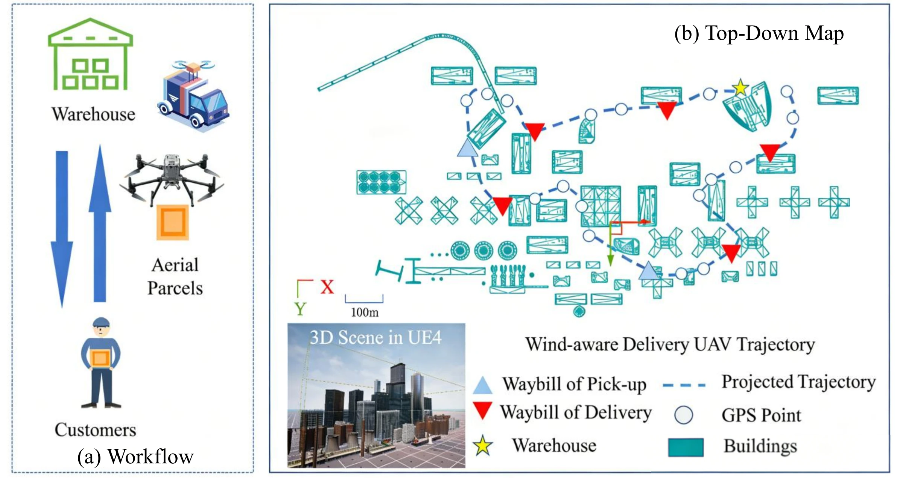
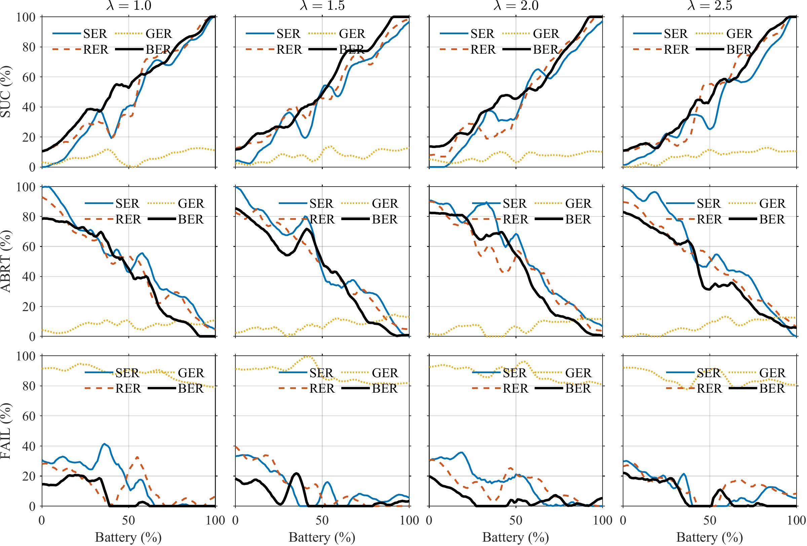
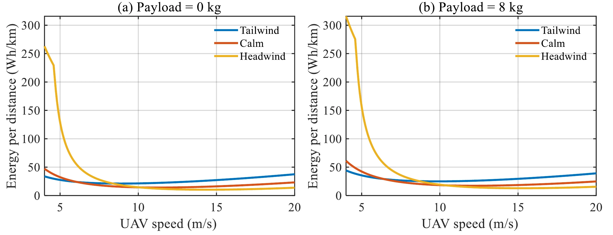

AIR–GROUND DELIVERY · 2026
Battery-Efficient UAV Delivery Routing
Robust Energy-Aware Routing for Air-Ground Cooperative Multi-UAV Delivery in Wind-Uncertain Environments
- 1The Hong Kong University of Science and Technology (Guangzhou), China
- 2The Hong Kong University of Science and Technology, Hong Kong
- 3Intelligent Transportation Thrust and Robotics and Autonomous Systems Thrust, Systems Hub, The Hong Kong University of Science and Technology (Guangzhou), China
- 4Intelligent Transportation Thrust, Systems Hub, Internet of Things Thrust, Information Hub, The Hong Kong University of Science and Technology (Guangzhou), China
- *Corresponding author

OVERVIEW
Re-check the return trip as the wind changes
In truck–drone logistics, UAVs must deliver parcels and return safely under time-varying wind that is only partially observable during flight. Most existing routing approaches assume static or deterministic energy models, which makes them unreliable when the wind changes. BER (Battery-Efficient Routing) is an online risk-sensitive planning framework for truck-assisted UAV delivery: routing is formulated on a time-dependent energy graph whose edge costs evolve with wind-induced aerodynamic effects, and the planner continuously evaluates return feasibility while balancing instantaneous energy expenditure against uncertainty-aware risk. In simulation, on synthetic graphs generated from Unreal Engine environments with quasi-real wind logs, BER improves mission success rates and reduces wind-induced failures compared with static and greedy baselines.
-
01
Wind changes what a route costs
At constant airspeed, headwind raises the required thrust and power and tailwind lowers them, so energy use depends on direction and time as well as distance. A path that is feasible at launch may become unsafe as the wind changes.
-
02
Return feasibility, checked at every step
At each decision step BER picks the next flight segment by weighing energy efficiency against wind-induced uncertainty, and prunes actions that would leave too little budget for a conservative return to the depot.
-
03
One layer of a hierarchy
Task allocation breaks the large delivery problem into tractable subproblems, BER plans wind-sensitive paths online under energy constraints, and decentralized reinforcement-learning controllers handle local trajectory execution and collision avoidance among drones.
METHOD
Online routing on a wind-dependent energy graph, inside a hierarchical delivery system
System-level constraints (multi-node coverage, wind level, UAV battery voltage and obstacle complexity) condition a clustering step that splits the multi-UAV–truck system into service areas. Below it, BER is the core routing module: it works on a directed waypoint graph whose vertices are feasible waypoints and whose edges are flyable segments, and it updates the edge costs as wind is observed. A trajectory stage turns the chosen waypoints into curvature-bounded paths, and learned controllers execute them locally. The objective is not merely to minimise energy but to determine and execute feasible delivery missions when future wind is unknown.
![Block diagram in five numbered modules. 1, System Prompt: multi-node coverage C, voltage of UAV d, wind level ω and complex obstacles x_obs. 2, Multi-node LLM Cluster: an estimation step passes the number of clusters K to LLM clustering, which outputs the optimal clustering centre. 3, BER Method: MADDPG with a flag that leads to obstacle avoidance when it is 0 and to Euclidean distance when it is 1, combined into a synthetic distance, followed by chronologizing, evaluation, a bundled group and bridging. 4, Trajectory Generation: obstacle detection and Dubins curve, exchanging waypoints with the BER module. 5, Multi-UAVs: three UAVs that receive an allocation scheme based on actual energy consumption.](assets/media/framework.webp)
-
Task allocation
A lightweight LLM-conditioned clustering module partitions customers according to energy and wind context. Customers are split into truck-served and drone-served sets, a heuristic TSP solver gives the truck route, and drone assignments follow from it: among the customers feasible in range, payload and service type, the nearest to the truck goes to the fastest available drone.
-
Wind and energy model
UAV motion is modelled as a curvature-bounded Dubins path relative to the ground. With constant airspeed, the wind triangle gives the ground speed on each segment; a segment is infeasible when the crosswind exceeds the airspeed or the ground speed is not positive. Power is constant avionics power plus a thrust term, with thrust taken from a simplified longitudinal equilibrium.
-
BER core
Each edge carries a wind-sensitive synthetic distance, LSE = Lgeo + λ·Lwind. Online, the UAV observes the local wind at its current vertex, updates its wind estimate and scores each outgoing edge by predicted energy plus λ times an uncertainty term. A return-feasibility check, with a curve factor κ > 1 as the safety margin on the return path, removes actions the remaining budget cannot support.
-
Execution
Each drone is a MADDPG agent that sees only a local field of view (obstacles, neighbouring drones and their goals) and outputs a heading and a speed. Its reward combines a time penalty, a goal reward and collision penalties with the wind-induced energy cost, weighted by the same λ. Dubins curves turn the discrete waypoints into curvature-bounded trajectories after an obstacle-detection stage.
![Four panels. a: a rendered view of the simulation environment with three multirotor UAVs above a field, orange arrows for external wind around one UAV and dotted lines for communication links. b: a circle divided into eight 45-degree sectors, the relative wind direction classes C0 to C3 in an upper and a lower half. c: a small directed graph on the vertices v_s, v1, v2, v3 and v_d with edge costs 16, 13, 7, 14, 44 and 105 in the time window from 0 to 10. d: the same graph for T ≥ 10, after the wind class has changed from C1 lower to C3 upper; three highlighted edges now cost 34, 6 and 31 and two others 22 and 88.](assets/media/wind-model.webp)
![Three stacked blocks. Wind-aware urban environment: a mobile depot truck, several UAVs, a wind field and a graph. Observation encoder, per UAV agent with weights shared across N agents: local occupancy map as a 3-channel tensor, relative goal vector, wind embedding vector, remaining energy budget and neighbour agent positions. Shared actor network: hidden ReLU layers take the encoded observation and output a continuous action of heading and speed, with parameters shared across agents; a centralized critic combines the global state, joint actions and wind-aware energy features into a Q-value, under centralized training and decentralized execution.](assets/media/maddpg-network.webp)
RESULTS
Simulated missions on graphs built from Unreal Engine scenes
All experiments are simulations. Urban delivery scenes are built in Unreal Engine 4 and abstracted into Erdős–Rényi (ER) graphs: vertices are waypoints or customer locations, including the depot, and each edge is a feasible flight segment with a time-varying energy cost induced by the wind along it. For quasi-real wind dynamics, time-indexed wind logs from a publicly available truck–UAV delivery dataset are replayed during the simulation to update edge costs online. Wind is discretised into 4 or 8 classes and the battery budget B is 100 or 50. BER is compared with three online routing policies that share its wind-sensitivity parameter λ: SER plans the whole route once from the initial wind, RER replans the remaining path at every visited vertex, and GER greedily takes the cheapest outgoing edge. Every method is run for 10 rounds, varying the number of customers and drones within each round.
- Mission success · 4 wind classes, B = 100
- 93.8%
- The UAV completes the route and returns safely within budget; SER reaches 89.6% and RER 90.3%. Table I.
- Mission success · 8 wind classes, B = 100
- 95.6%
- With the finer wind discretisation; SER reaches 90.8% and RER 91.7%. Table I.
- Mission success · 4 wind classes, B = 50
- 61.5%
- With the low battery budget; SER reaches 55.2% and RER 56.4%. Table I.
- Mission success · 8 wind classes, B = 50
- 66.2%
- The largest gap in the table: SER reaches 57.6% and RER 57.9%. Table I.
Mission outcomes under two wind discretisations and two battery budgets
BER has the highest success rate in all four settings. The paper puts its gain over SER and RER at approximately 3–8%, more pronounced at the low budget. SER never fails but cannot take advantage of favourable wind changes or recover from unexpected increases in energy use, and it aborts 44.8% and 42.4% of the low-budget missions. RER can salvage missions that would otherwise fail, but at the low budget 38.2% and 40.0% of its missions deliver the parcel without meeting the return criterion. GER, which only minimises the instantaneous energy cost, fails in over 67% of missions in every setting.
Table I of the paper: quasi-real mission outcomes on ER graphs under different wind discretisations, mean ± standard deviation in %. B: battery budget.
| Method | SUC ↑ (%) | DEL (%) | FAIL ↓ (%) | ABRT (%) |
|---|---|---|---|---|
| 4 wind classes, B = 100 | ||||
| SER | 89.6 ± 1.2 | 1.1 ± 0.4 | 0.0 ± 0.0 | 9.3 ± 1.3 |
| RER | 90.3 ± 2.0 | 9.7 ± 1.9 | 0.0 ± 0.0 | 0.0 ± 0.0 |
| GER | 8.1 ± 3.4 | 24.2 ± 3.1 | 67.7 ± 4.2 | 0.0 ± 0.0 |
| BER | 93.8 ± 1.1 | 2.4 ± 0.8 | 0.0 ± 0.0 | 3.8 ± 0.9 |
| 4 wind classes, B = 50 | ||||
| SER | 55.2 ± 1.6 | 0.0 ± 0.0 | 0.0 ± 0.0 | 44.8 ± 1.7 |
| RER | 56.4 ± 2.5 | 38.2 ± 2.3 | 5.4 ± 1.6 | 0.0 ± 0.0 |
| GER | 3.6 ± 1.9 | 20.3 ± 2.6 | 76.1 ± 3.8 | 0.0 ± 0.0 |
| BER | 61.5 ± 1.3 | 4.2 ± 1.1 | 0.0 ± 0.0 | 34.3 ± 1.5 |
| 8 wind classes, B = 100 | ||||
| SER | 90.8 ± 1.1 | 0.9 ± 0.3 | 0.0 ± 0.0 | 8.3 ± 1.2 |
| RER | 91.7 ± 1.8 | 8.3 ± 1.7 | 0.0 ± 0.0 | 0.0 ± 0.0 |
| GER | 7.4 ± 3.1 | 23.1 ± 3.0 | 69.5 ± 4.0 | 0.0 ± 0.0 |
| BER | 95.6 ± 0.9 | 1.8 ± 0.6 | 0.0 ± 0.0 | 2.6 ± 0.7 |
| 8 wind classes, B = 50 | ||||
| SER | 57.6 ± 1.5 | 0.0 ± 0.0 | 0.0 ± 0.0 | 42.4 ± 1.6 |
| RER | 57.9 ± 2.3 | 40.0 ± 2.2 | 2.1 ± 0.9 | 0.0 ± 0.0 |
| GER | 3.4 ± 1.7 | 21.0 ± 2.5 | 75.6 ± 3.6 | 0.0 ± 0.0 |
| BER | 66.2 ± 1.2 | 3.6 ± 0.9 | 0.0 ± 0.0 | 30.2 ± 1.3 |
The four outcomes are mutually exclusive. SUC (success): the UAV completes the route and returns safely within budget. DEL (delivered): the payload is delivered but the mission does not fully satisfy the return-feasibility criterion. FAIL: infeasible execution, for example energy depletion or violation of a hard constraint. ABRT (aborted): the online feasibility check triggers a safe abort and the mission ends early.
Risk sensitivity across battery levels
With the risk-sensitivity parameter λ varied from 1.0 to 2.5, BER generally keeps comparable or higher success rates than SER, RER and GER across battery levels, with lower failure rates, and behaves relatively stably under the different risk settings.

Wind and payload in the energy model
The energy model gives the energy per distance as a function of UAV speed under different wind conditions and payloads. Headwind significantly increases the energy demand, particularly at low speeds, and in both payload settings an intermediate speed range minimises the energy per distance.

Ablation and scope
The ablation study (Table II of the paper), run on the same wind-log dataset, finds that the energy-feasibility check matters most: removing the budget gate lowers the success rate from 92.4% to 74.6%. Removing the wind costs raises both abort and failure rates and the energy consumed, and removing trajectory optimisation mainly raises the maximum turning angle.
The paper names two limitations: the evaluation is in simulation with quasi-real wind logs, and wind dynamics are discretised into a limited number of directional classes, which may not capture the fine-grained turbulence of dense urban airflow. All drones are assumed to share identical flight dynamics, cruising speed and battery endurance. A later preprint by the same authors, arXiv:2608.11641, also studies energy-aware routing for truck–UAV delivery under uncertain wind.
CITATION
@misc{li2026robust,
title={Robust Energy-Aware Routing for Air-Ground Cooperative Multi-UAV Delivery in Wind-Uncertain Environments},
author={Li, Tianshun and Lu, Hongliang and Sheng, Yanggang and Wang, Zhongzhen and Li, Haoang and Zheng, Xinhu},
year={2026},
eprint={2604.13441},
archivePrefix={arXiv},
primaryClass={cs.RO},
url={https://arxiv.org/abs/2604.13441},
}